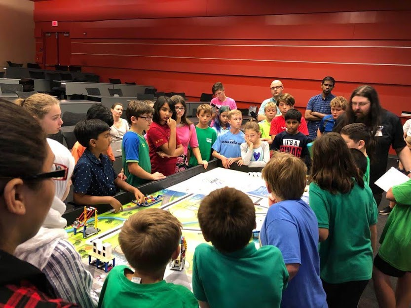

What is FLL?
First is a competitive robotics competition where kids get to use their imagination to build a robot and help society. First is split into 3 sections: FLL(First Lego League), FTC(First Tech Challenge), and FRC(First Robotics Challenge). We compete in FLL, where we get to make a small robot that can complete things called missions. Each mission requires us to make an attachment that will go on the robot on time of the mission. We program the robot to go to the mission and make the attachment do the mission. FTC is a competition for older people and they create a much bigger robot that can do much bigger missions. FRC lets kids build industrial-sized robots to complete missions within a strict period.
